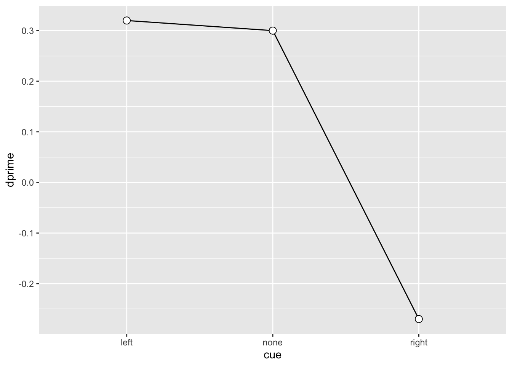
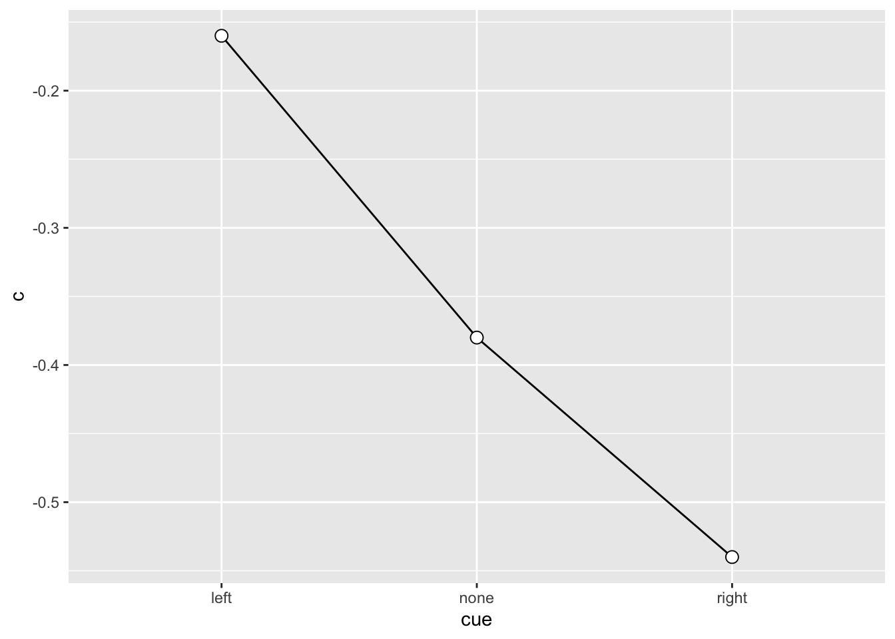

Signal Detection Theory: II
Beispiel: PsychoPy Experiment.
Andrew Ellis ![]()
SDT Kennzahlen für alle VPn berechnen
Wir werden nun d', k und c (bias) für alle Versuchspersonen in diesem Datensatz berechnen.
Note
Wichtig: Was erwarten wir für die Parameter d' und c? Hinweis: Der Cue war entweder rechts oder links (oder neutral). Wie sollte das die Parameter beeinflussen?
Daten importieren
Zuerst die Daten downloaden, und speichern.
Variablen bearbeiten
Zu factor konvertieren, etc.
Trials klassifizieren
Als Hit, Miss, CR und FA.
sdt <- d |>
mutate(type = case_when(
direction == "___" & choice == "___" ~ "___"),
___,
___,
___)sdt# A tibble: 2,362 × 6
ID condition cue direction choice type
<fct> <fct> <fct> <fct> <fct> <chr>
1 chch04 valid left left left CR
2 chch04 valid left left left CR
3 chch04 valid left left right FA
4 chch04 invalid right left left CR
5 chch04 neutral none left left CR
6 chch04 valid left left left CR
7 chch04 invalid right left left CR
8 chch04 valid left left left CR
9 chch04 neutral none left left CR
10 chch04 neutral none right left Miss
# … with 2,352 more rowsSDT Kennzahlen zusammenzählen
sdt_summary# A tibble: 170 × 4
# Groups: ID, cue [45]
ID cue type n
<fct> <fct> <chr> <int>
1 chch04 left CR 29
2 chch04 left FA 3
3 chch04 left Hit 7
4 chch04 left Miss 1
5 chch04 none CR 38
6 chch04 none FA 2
7 chch04 none Hit 34
8 chch04 none Miss 6
9 chch04 right CR 5
10 chch04 right FA 3
# … with 160 more rowsVon wide zu long konvertieren
sdt_summary <- sdt_summary |>
pivot_wider(names_from = type, values_from = n)sdt_summary# A tibble: 45 × 6
# Groups: ID, cue [45]
ID cue CR FA Hit Miss
<fct> <fct> <int> <int> <int> <int>
1 chch04 left 29 3 7 1
2 chch04 none 38 2 34 6
3 chch04 right 5 3 25 7
4 chmi14 left 21 10 5 3
5 chmi14 none 18 19 29 7
6 chmi14 right 3 4 26 4
7 J left 19 12 5 3
8 J none 23 16 33 6
9 J right 6 2 20 12
10 jh left 32 NA 5 3
# … with 35 more rowsFunktionen definieren
NAs ersetzen
Hit Rate und False Alarm Rate berechnen
sdt_summary <- sdt_summary |>
mutate(hit_rate = ___,
fa_rate = ___)Werte 0 und 1 korrigieren
Z-Transformation
sdt_summary <- sdt_summary |>
mutate(zhr = ___,
zfa = ___)SDT Kennzahlen berechnen
sdt_summary <- sdt_summary |>
mutate(dprime = ___,
k = ___,
c = ___) |>
mutate(across(c(dprime, k, c), round, 2))Variablen auswählen
sdt_final <- sdt_summary |>
select(ID, cue, dprime, k, c)SDT als GLM
Tip
Vertiefung: Wir können d', k und c auch als Regressionskoeffizienten einer Probit Regression schätzen.
Eine Person auswählen.
Visualisieren
SU6460_sdt# A tibble: 3 × 5
# Groups: ID, cue [3]
ID cue dprime k c
<fct> <fct> <dbl> <dbl> <dbl>
1 SU6460 left 0.32 0 -0.16
2 SU6460 none 0.3 -0.23 -0.38
3 SU6460 right -0.27 -0.67 -0.54SU6460_sdt |>
ggplot(aes(x = cue, y = dprime, group = 1)) +
geom_line() +
geom_point(shape = 21, size = 3, fill = "white")
SU6460_sdt |>
ggplot(aes(x = cue, y = c, group = 1)) +
geom_line() +
geom_point(shape = 21, size = 3, fill = "white")
Generalized Linear Model
Check levels: right muss die zweite Faktorstufe sein!
levels(SU6460$choice)[1] "left" "right"SU6460_glm_k_left <- glm(choice ~ direction,
family = binomial(link = "probit"),
data = SU6460 |> filter(cue == "left"))
summary(SU6460_glm_k_left)
Call:
glm(formula = choice ~ direction, family = binomial(link = "probit"),
data = filter(SU6460, cue == "left"))
Deviance Residuals:
Min 1Q Median 3Q Max
-1.4006 -1.1774 0.9695 1.1774 1.1774
Coefficients:
Estimate Std. Error z value Pr(>|z|)
(Intercept) -1.250e-16 2.216e-01 0.000 1.000
directionright 3.186e-01 5.028e-01 0.634 0.526
(Dispersion parameter for binomial family taken to be 1)
Null deviance: 55.352 on 39 degrees of freedom
Residual deviance: 54.946 on 38 degrees of freedom
AIC: 58.946
Number of Fisher Scoring iterations: 4SU6460_glm_k_right <- glm(choice ~ direction,
family = binomial(link = "probit"),
data = SU6460 |> filter(cue == "right"))
summary(SU6460_glm_k_right)
Call:
glm(formula = choice ~ direction, family = binomial(link = "probit"),
data = filter(SU6460, cue == "right"))
Deviance Residuals:
Min 1Q Median 3Q Max
-1.6651 -1.4614 0.9178 0.9178 0.9178
Coefficients:
Estimate Std. Error z value Pr(>|z|)
(Intercept) 0.6745 0.4818 1.400 0.162
directionright -0.2722 0.5331 -0.511 0.610
(Dispersion parameter for binomial family taken to be 1)
Null deviance: 50.446 on 39 degrees of freedom
Residual deviance: 50.181 on 38 degrees of freedom
AIC: 54.181
Number of Fisher Scoring iterations: 4SU6460_glm_c_left <- glm(choice ~ dir,
family = binomial(link = "probit"),
data = SU6460 |> filter(cue == "left"))
summary(SU6460_glm_c_left)
Call:
glm(formula = choice ~ dir, family = binomial(link = "probit"),
data = filter(SU6460, cue == "left"))
Deviance Residuals:
Min 1Q Median 3Q Max
-1.4006 -1.1774 0.9695 1.1774 1.1774
Coefficients:
Estimate Std. Error z value Pr(>|z|)
(Intercept) 0.1593 0.2514 0.634 0.526
dir 0.3186 0.5028 0.634 0.526
(Dispersion parameter for binomial family taken to be 1)
Null deviance: 55.352 on 39 degrees of freedom
Residual deviance: 54.946 on 38 degrees of freedom
AIC: 58.946
Number of Fisher Scoring iterations: 4SU6460_glm_c_right <- glm(choice ~ dir,
family = binomial(link = "probit"),
data = SU6460 |> filter(cue == "right"))
summary(SU6460_glm_c_right)
Call:
glm(formula = choice ~ dir, family = binomial(link = "probit"),
data = filter(SU6460, cue == "right"))
Deviance Residuals:
Min 1Q Median 3Q Max
-1.6651 -1.4614 0.9178 0.9178 0.9178
Coefficients:
Estimate Std. Error z value Pr(>|z|)
(Intercept) 0.5384 0.2665 2.020 0.0434 *
dir -0.2722 0.5331 -0.511 0.6096
---
Signif. codes: 0 '***' 0.001 '**' 0.01 '*' 0.05 '.' 0.1 ' ' 1
(Dispersion parameter for binomial family taken to be 1)
Null deviance: 50.446 on 39 degrees of freedom
Residual deviance: 50.181 on 38 degrees of freedom
AIC: 54.181
Number of Fisher Scoring iterations: 4Reuse
Citation
BibTeX citation:
@online{ellis2022,
author = {Andrew Ellis},
title = {Signal {Detection} {Theory:} {II}},
date = {2022-03-29},
url = {https://kogpsy.github.io/neuroscicomplabFS22//pages/chapters/06_signal_detection_ii.html},
langid = {en}
}
For attribution, please cite this work as:
Andrew Ellis. 2022. “Signal Detection Theory: II.” March
29, 2022. https://kogpsy.github.io/neuroscicomplabFS22//pages/chapters/06_signal_detection_ii.html.